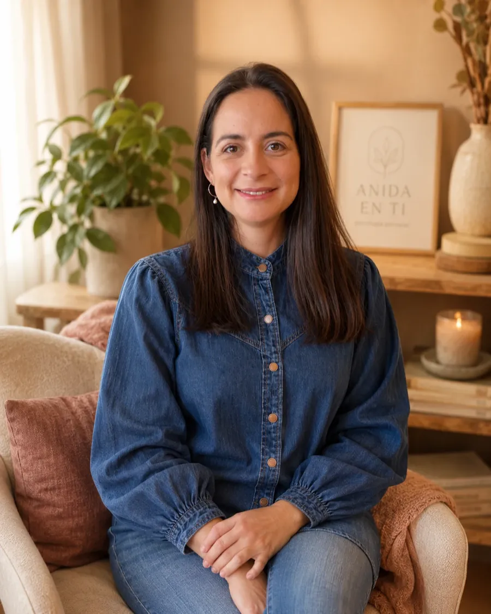

Basado en evidencia
Integro enfoques cognitivo-conductual, sistémico y específicos en salud mental perinatal, con protocolos clínicos validados para cada área.
Formación, enfoque y forma de trabajar: lo que hay detrás de la consulta.

Soy Francisca Bustos Maldonado, psicóloga clínica perinatal. Acompaño a mujeres mientras la maternidad transforma la identidad, el cuerpo, los vínculos y la relación con el mundo, incluyendo historias personales antiguas que muchas veces no estaban nombradas.
Mi trabajo consiste en ofrecerte un espacio clínico donde eso que está ocurriendo pueda pensarse, decirse y transformarse, a tu ritmo y con el cuidado que merece.
"En salud mental perinatal,
el tiempo de consulta es
parte del tratamiento."
Universidad del Desarrollo.
Práctica clínica en salud mental.
Universidad de Zaragoza.
Especialización en salud mental materna y perinatal.
Postpartum Support International · Certified Perinatal Mental Health Professional (PMH-C training).
Universidad de los Andes · Chile.
Con enfoque en la salud mental materna y el vínculo temprano.
Psicoterapia online por videollamada.
Miembro Col. Psicólogos Chile · Reg. 12.847.
Integro enfoques cognitivo-conductual, sistémico y específicos en salud mental perinatal, con protocolos clínicos validados para cada área.
Creo que la escucha cuidada es la primera intervención. Las sesiones respetan el tiempo que cada historia necesita, sin atajos ni recetas.
No hay una única forma "correcta" de vivir la maternidad. Mi consulta es un espacio donde puedes hablar con honestidad, incluso de lo que cuesta decir.
El proceso clínico se construye contigo. Trabajo con transparencia sobre objetivos, enfoque y tiempos, y coordino con tu equipo de salud cuando corresponde.

La psicoterapia se realiza online, en un espacio privado, tranquilo y cuidado para sostener el proceso clínico con confidencialidad.
Reservar sesión →Una primera sesión basta para saber si este es el espacio que buscas.